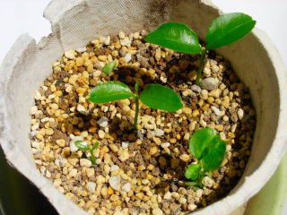
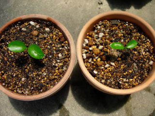
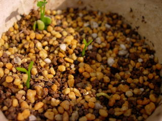
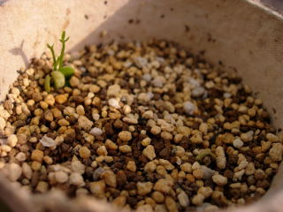
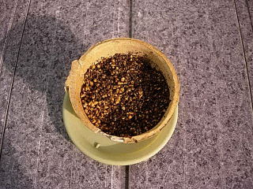

鉢を大きくしました。
2010/07/24
3号から6号鉢に植え替えましｔ。
まだ小さいので3号でも十分だったんですが、鉢が大きい方が早く大きくなるかなとか、水の管理が楽かなと思い変えました。
あと、苔をちょっと植えてみました。盆栽みたいになるといいです。
なるかな？
2010/07/24
3号から6号鉢に植え替えましｔ。
まだ小さいので3号でも十分だったんですが、鉢が大きい方が早く大きくなるかなとか、水の管理が楽かなと思い変えました。
あと、苔をちょっと植えてみました。盆栽みたいになるといいです。
なるかな？
2010/05/29
まだ小さいですが、根がからむといけないので植え替えです。

大きいの2本を選んで鉢に植え替えしました。

小さい鉢ですが、当分はこれでいいかなと思っています。
2010/05/16
小さい芽が2つ新たに出て来ました。

気温が高くなると生育がいいみたいですね。
5月になってから種を蒔けばよかったかもしれません
2010/05/09
少し前から発芽していたので、ちょっと伸びています。

今のところ1本だけです。
2ヵ月かかってこれです。ちょっと寂しいですね。
2010/03/14
昨日食べた「ぽんかん」の中にあった種を蒔きました。

小さいですが甘くて美味しかったので蒔きました。
第2号です。
柑橘系は好きなので、種を見つけたらドンドン植えたいです。
大きくなったら植え場に困るかもしれないですが、すくすくと大きくなるとはあまり思っていないので、次々と試して行きたいです。
畑仕事じゃないよ。